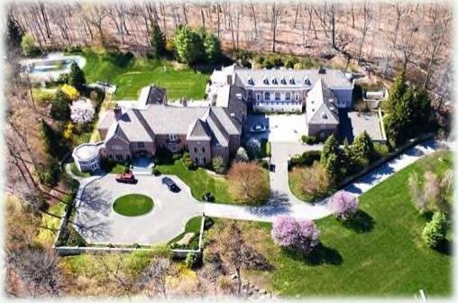

Nhưng sau đó - giống như giám đốc điều hành công nghệ ném vàng xuống biển - mọi thứ sụp đồ. Vào giữa những năm 2000, Fuscone đã vay nặng lãi để mở rộng ngôi nhà rộng 1.670 mỶ ở Greenwich, Connecticut có 11 phòng tắm, hai thang máy, hai hồ bơi, bảy nhà để xe và tốn hơn 90.000 đồ la một tháng để bảo trì. Sau đó, cuộc khủng hoảng tài chính năm 2008 ập đến. Cuộc khủng hoảng làm tổn hại đến tài chính của hầu hết mọi người. Nó dường như đã biến Fuscone thành cát bụi. Nợ cao và tài sản kém thanh khoản khiến ông phá sản. “Tôi hiện không có thu nhập," ông nói với một thầm phán khi phá sản vào năm 2008. Đầu tiên (ăn nhà ở Palm Beach bị tịch thu. Năm 2014 đến lượt dinh thự 6reenwich. Năm tháng trước khi Ronald Read để lại tài sản cho tổ chức từ thiện, nhà của ichard Fuscone — nơi các vị khách nhớ lại “cảm giác hồi hộp khi ăn uống và khiêu vũ trên một tấm bạt che bể bơi trong nhà” — đã được bán trong một cuộc đấu giá tịch biên với giá thấp hơn 75% giá trị. onald Read đã kiên nhắn; Richard Fuscone đã hoang phí. Đó là tất cả những gì đã làm lu mờ khoảng cách lớn về học vấn và kinh nghiệm giữa hai người. Bài học ở đây là không nên bắt chước Richard và học hỏi từ Ronald. Điều hấp dần ở những câu chuyện này là về mặt tài chính. (Có ngành nghề nào mà một người không có băng đại học, không được đào a0, không có nền tảng, không có kinh nghiệm chính thức và không có mối quan hệ nào lại vượt trội hơn một người có nền giáo dục tốt nhất, được đào ạ0 tốt nhất và có mối quan hệ tốt nhất? Tôi đã suy nghĩ rất nhiều. Không thể có chuyện Ronald Read thực hiện ca ghép tim tốt hơn một bác sĩ phẫu thuật được đào tạo tại Harvard. Hoặc thiết kế một tòa nhà chọc trời cao cấp hơn các kiến trúc sư được đào tạo tốt nhất. 5ẽ không bao giờ có chuyện một người gác cổng làm tốt hơn những kỹ sư hạt nhân hàng đầu thể giới. Nhưng những câu chuyện này xảy ra trong đầu tư.
